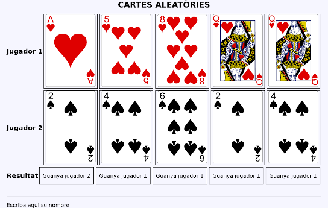

Activitats
POO Bàsic
-
Crea una classe
Employeeque represente un empleat amb el seu nom, cognoms i sou. Encapsula les propietats mitjançant mètodes getters/setters i afegeix els següents mètodes:- Obtenir el nom complet:
getFullname(): string. - Que torne un booleà indicant si deu o no pagar impostos (es paguen quan el sou és superior a 3333€):
mustPayTaxes():bool.
- Obtenir el nom complet:
-
Afegeix una propietat privada que que emmagatzeme una sèrie de números de telèfons. Afegiu els següents mètodes:
public function addPhone(string $phone): void→ Afegeix un telèfon a l'arraypublic function listPhones(): string→ Torna els telèfons en separats per comespublic function emptyPhones(): void→ Elimina tots els telèfons
-
Crea el constructor amb els paràmetres nom i cognoms. Si el constructor rep un tercer paràmetre, serà el sou. Si no, s’assignaran 1000€ com a sou inicial. Fes una versió fent ús de la propagació de propietats de PHP8.
-
Afegeix una constant
MAX_SALARYamb el valor del sou que ha de pagar impostos, i modifica el codi per utilitzar la constant. -
Completa el següent mètode amb una cadena HTML que mostre les dades d'un empleat dins d'un paràgraf i tots els telèfons mitjançant una llista ordenada (hauràs de crear un getter per als telèfons):
public static function toHtml (Employee $emp): string -
Representa la classe en UML.
-
Crea una classe anomenada
Cardque contindrà la informació relativa una carta de la baralla francesa amb les seguents propietats:suit, string, privada.symbol, string, privada.value, entera, privada.
El constructor i el seus getters i setters.
Crea cinc objects diferents en un array i mostra'ls de forma aleatòria.
classDiagram class Card { -string suit -string symbol -int value +void function __construct (string, string, int) } -
Crea una classe anomenada
CardCollectionque contindrà la propietatcardsque serà un array de cartes (objectesCard).Hi haurà dues formes d'inserir cartes, mitjançant el mètode
CardCollection::add(array $array)que rebrà un array de cartes i els afegirà a la propietatcardsi el mètodeCardCollecion::addCard(Card $card)que rebrà una carta i la inserirà en la propietatcards.A més, contindrà el mètode
shuffle()que ordenarà les cartes de forma aleatòria.Instància la classe, afig 5 cartes, reordena-les i mostra-les.
classDiagram class CardCollection { -cards: array +add(cards: array) +addCard(card: Card): void shuffle() getCards() array } class Card { -suit: string -symbol: string -value: int __construct (suit: string, symbol: string, value: int) } CardCollection "1"--"*" Card -
Crea el mètodo
writeren la classeCardCollectionde forma que mostre en format lliure la col·leció de cartes. Amb aquest mètode afegirem una nova capa d'abstracció ja que no caldrà accedir directament als mètodes de la classeCardper representar-les. -
Implementa la interfície
IteratorenCardCollectionde forma que es puguen recórrer la col·lecció de cartes en unforeach; -
Fent ús de les classes anteriors crearem una aplicació bàsica en la que s'enfronten dos jugadors. Un exemple de partida podria ser el següent:

La classe
CardCollectionquedarà així:classDiagram class CardCollection { -cards: array add(cards: array) addCard(card: Card) void ... deal(amount: int) array play() Card }Els requisits seran els següents:
- Es repartiran 5 cartes per jugador.
- El mètode
dealque repartirà el número de cartes que s'indique com a paràmetre eliminant-les de la col·lecció. - El mètode
playjugarà una carta que s'eliminarà de la col·lecció. - Cada tirada la guanya el jugador que té la carta més alta, segons el valor.
- La partida la guanya el jugador que ha guanyat més vegades.
- En cas d'empat es repartirà una nova carta a cada jugador.
Així que en la aplicació interactuaran 3 objectes de tipus
CardCollection. -
abastract_game: en l'activitat anterior vam crear tres objectes de tipusCardCollection. Podem observar que alguns mètodes, com per exempledeal(repartir) tenen sentit en l'objecte quan representen la mà d'un jugador.Podem replantejar la solució de la següent manera:
classDiagram direction LR class CardCollection { << abstract >> #cards: array +add(cards: Card[]) +addCard(card: Card) void getCards() Card[] } class Card { -suit: string -symbol: string -value: int __construct (suit: string, symbol: string, value: int) } class Deck { shuffle() deal(amount: int = 1) Card[] } class Hand { play() Card } CardCollection "1"--"*" Card Deck --|> CardCollection Hand --|> CardCollectionEn el diagrama anterior definim
CardCollectioncom una classe abstracta, d'ella hereten dos classesDeckque representa la baralla iHandque representa les cartes d'un jugador. Cada classe exten la funcionalitat afegint els seus propis mètodes.Recorda que una classe abstracta és un tipus de classe que no s'instància i sols poden ser heretades traslladant així un funcionamient obligatori a les classes filles (o subclasses).
Modifica la solució a l'activitat anterior amb la nova jerarquia de classes.
Errors i excepcions
320-error-handling: modifica l'activitat 303,Empleat.phpde forma en cas que el sou siga negatiu llance una excepció amb el missage "El sou no pot ser negatiu". Captura l'excepció i mostra el missatge.321-error-handling: modifica l'activitat anterior llançant en esta ocasió una excepció personalitzadaInvalidWageExceptionamb el missatge per defecte "El sou no pot ser negatiu". Captura l'excepticó i mostra el missatge.
Projecte: Truiter
En les següents activitats anem a posar en marxa el que serà el nostre projecte. Cal tenir en compte que es tracta d'un projecte de caracter didàctic, així que algunes coses poden no ser del tot correctes des del punt de vista de la qualitat del codi.
Per al projecte disposarem de la següent estructura de directoris:
.
├── index.php
├── src
└── views
src contindrà les classes i views les vistes.
- Crea una classe per representar usuaris (
User). Aquesta classe contindrà les propietats necessàries per a emmagatzemar un usuari de l'aplicació. El constructor rebrà com a paràmetres el nom i el nom d'usuari. En el cos del constructor assigna a la data de creació la data actual.
<?php
// index.php
$user = new User('Bart Simpson', 'bart');
?>
<p><?= $user->getName() ?> (@<?= $user->getUsername() ?>) - Creation
date: <?= $user->getCreatedAt()->format('d-m-Y h:i:s') ?></p>
Bart Simpson (@bart) - Creation date: 11-10-2022 10:24:27
- Crea una classe per representar tweets (
Tweet). Aquesta classe contindrà les propietats necessàries per a emmagatzemar un tweet. Crea els setters i els getters. El constructor rebrà com a paràmetres el text i l'autor. En el cos del constructor assigna a la data de creació la data actual i al número de likes 0.
<?
$user = new User('Bart Simpson', 'bart');
// fem un delay de 4 segons perquè les dates de creació no coincidisquen
sleep(4);
$tweet = new Tweet('Hola món!', $user);
?>
<h2>Users</h2>
<p><?= $user->getName() ?> (@<?= $user->getUsername() ?>) - Creation
date: <?= $user->getCreatedAt()->format('d-m-Y h:i:s') ?></p>
<h2>Tweets</h2>
<?php $tweetUser = $tweet->getAuthor() ?>
<p><?= $tweetUser->getName() ?> (@<?= $tweetUser->getUsername() ?>) - Creation
date: <?= $tweet->getCreatedAt()->format('d-m-Y h:i:s') ?></p>
<p><?=$tweet->getText() ?></p>
<p><?=$tweet->getLikeCount() ?></p>
<hr />
Users Bart Simpson (@bart) - Creation date: 12-10-2022 10:42:51
Tweets Bart Simpson (@bart) - Creation date: 12-10-2022 10:42:55 Hola món! Like counter: 0
- Crea la següent jerarquia de classes que represent els diferents tipus de mitjà que poden adjuntar a un tuit:
<?php
// index.php
...
$video = new Video('Vídeo 1', 1080, 1024, 25);
$photo = new Photo('Foto 1', 800, 600, 'Text alternatiu');
?>
<h2>Media</h2>
...
<?= $video->getSummary();?>
<?= $photo->getSummary();?>
Media
Vídeo 1 [1080x1024] (25 s)
Foto 1 (Text alternatiu) [800x600]
- Arribats a aquest punt anem a relacionar totes les classes que hem creat mitjançant la classe
Twitter. Crea la classe representada en el gràfic tenint en compte queusersés un array d'usuaris,tweetsés un array de tuits iattachementsun array de mitjans. S'han omitit algunes propietats i mètodes per simplicar el diagrama UML.
<?php
$twitter = new Twitter();
$user = new User('Bart Simpson', 'bart');
$twitter->addUser($user);
// fem un delay de 4 segons perquè les dates de creació no coincidisquen
sleep(4);
$userH = new User('Homer Simpson', 'homerj');
$twitter->addUser($userH);
$users = $twitter->getUsers();
sleep(4);
$tweet = new Tweet('Hola món!', $user);
$video = new Video('Vídeo 1', 1080, 1024, 25);
$photo = new Photo('Foto 1', 1080, 1024, 'Text alternatiu');
$tweet->addAttachment($video);
$tweet->addAttachment($photo);
$twitter->addTweet($tweet);
$twitter->LikeTweet($user, $tweet);
$twitter->LikeTweet($userH, $tweet);
$tweet = new Tweet("Kids, just because I don’t care doesn’t mean I’m not listening.", $userH);
$twitter->addTweet($tweet);
$tweet = new Tweet("I’ve learned that life is one crushing defeat after another until you just wish Flanders was dead.", $userH);
$twitter->addTweet($tweet);
$tweets = $twitter->getTweets();
?>
<h1>Welcome to Truiter</h1>
<p><?= $twitter->getNumberOfUsers() ?> users, <?= $twitter->getNumberOfTweets() ?> tweets.</p>
<h2>Users</h2>
<?php foreach ($users as $user) : ?>
<p><?= $user->getName() ?> (@<?= $user->getUsername() ?>) - Creation
date: <?= $user->getCreatedAt()->format('d-m-Y h:i:s') ?></p>
<?php endforeach; ?>
<h2>Tweets</h2>
<?php foreach ($tweets as $tweet) : ?>
<?php $tweetUser = $tweet->getAuthor() ?>
<p><?= $tweetUser->getName() ?> (@<?= $tweetUser->getUsername() ?>) - Creation
date: <?= $tweet->getCreatedAt()->format('d-m-Y h:i:s') ?></p>
<blockquote><?= $tweet->getText() ?></blockquote>
<p>Like counter: <?= $tweet->getLikeCount(); ?></p>
<?php if (count($tweet->getAttachments()) > 0) : ?>
<h3>Attachments</h3>
<ul>
<?php foreach ($tweet->getAttachments() as $attachment) : ?>
<li><?= $attachment->getSummary() ?></li>
<?php endforeach; ?>
</ul>
<?php endif ;?>
<hr/>
<?php endforeach; ?>
Welcome to Truiter 2 users, 3 tweets.
Users Bart Simpson (@bart) - Creation date: 13-10-2022 09:45:52 Homer Simpson (@homerj) - Creation date: 13-10-2022 09:45:56
Tweets Bart Simpson (@bart) - Creation date: 13-10-2022 09:46:00 Hola món! Like counter: 2 Attachments - Vídeo 1 [1080x1024] ( 25 s) - Foto 1 (Text alternatiu) [1080x1024]Homer Simpson (@homerj) - Creation date: 13-10-2022 09:46:00 Kids, just because I don’t care doesn’t mean I’m not listening. Like counter: 0
Homer Simpson (@homerj) - Creation date: 13-10-2022 09:46:00 I’ve learned that life is one crushing defeat after another until you just wish Flanders was dead. Like counter: 0
-
Implementa la càrrega automàtica (autoload) de classes tenint en compte que:
- Les classes estaran en el directori
src/App. - L'espai de noms serà App.
Crea les excepcions InvalidWidthMediaException i InvalidHeightMediaException que es llançaran quan alguna de les dimensions dels mitjans siga inferior a 300 píxels. Guarda-les en el directori src/App/Exceptions amb el namespace corresponent.
- Les classes estaran en el directori